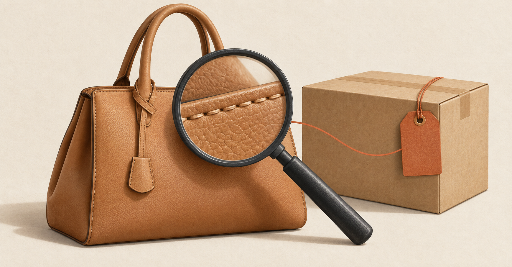
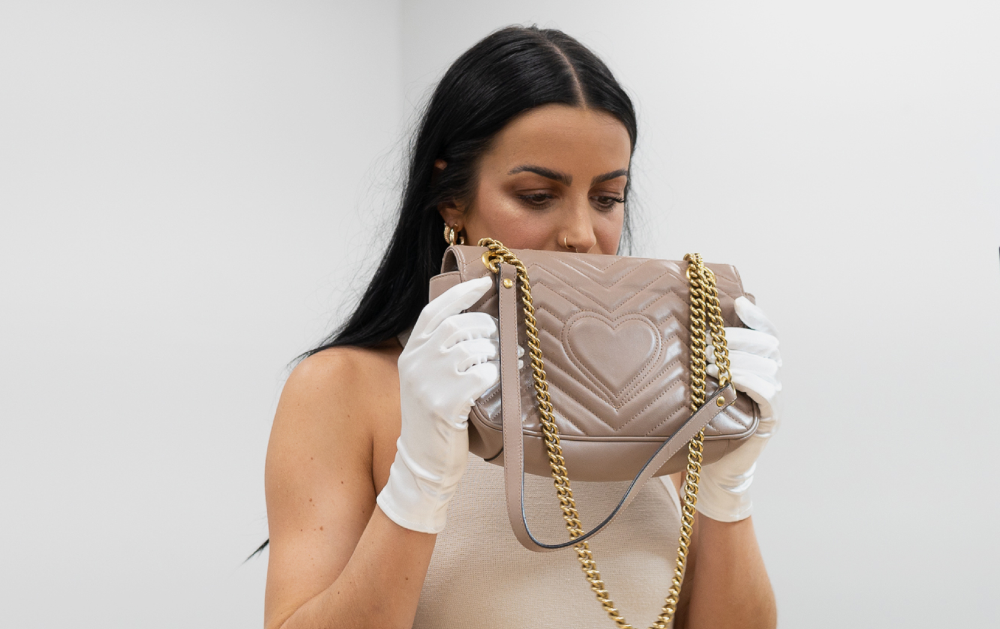
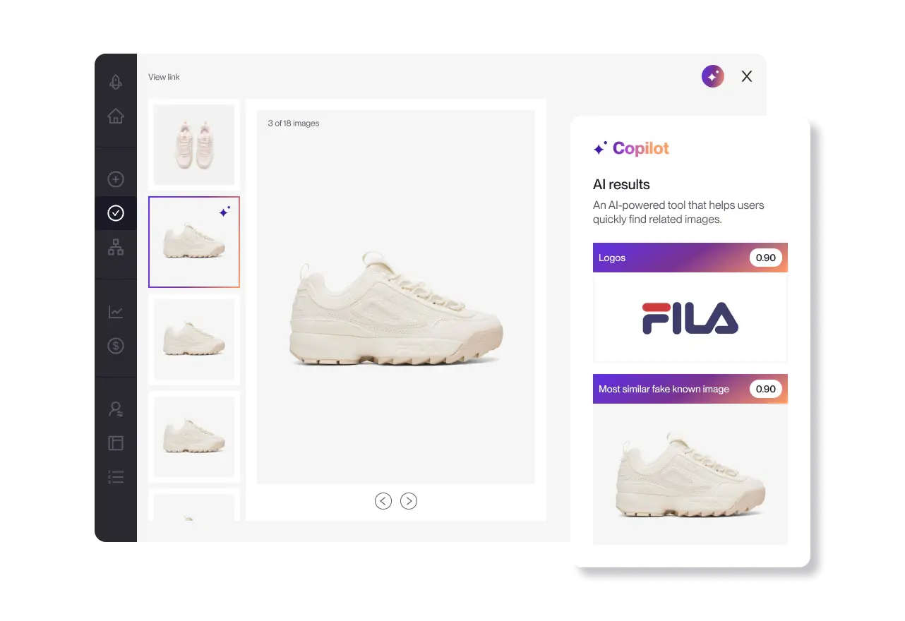
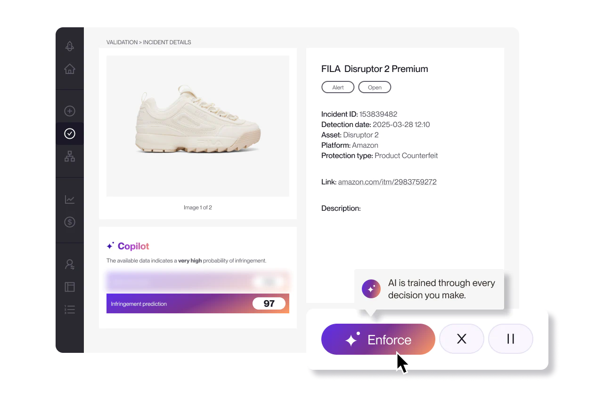
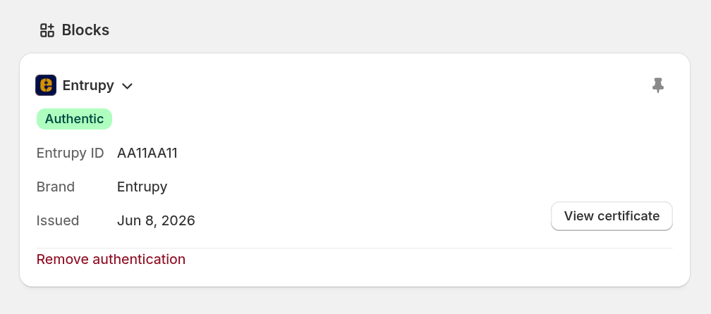
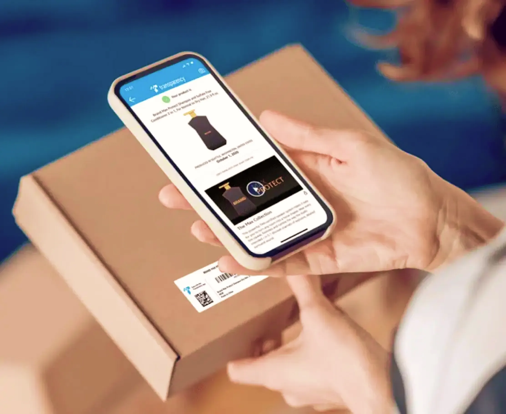

HELLO, HUMAN! COMMERCE INSIGHT 05
AI가 가품을 의심하면,
판매와 배송은 어떻게 처리할까?
의심 상품 선별부터 실물 검수, 판매 보류와 재개까지

01 · 상품 사진과 배송되는 물건
사진 속 상품이 정품이어도,
배송될 물건은 따로 확인해야 합니다
판매자가 공식 상품 사진을 복사해 상세페이지를 만들었다고 가정해 보겠습니다. AI가 그 사진을 정품 이미지와 비슷하다고 판단해도, 실제 배송할 물건이 정품인지는 알 수 없습니다. 반대로 정품이라도 오래 사용했거나 어두운 곳에서 촬영했다면 기준 이미지와 다르게 보일 수 있습니다.
가품 대응 담당자의 일은 여기서 시작합니다. 의심한 이유를 확인하고, 실물과 증빙 자료를 확보한 뒤, 어떤 상품과 주문에 조치할지 결정해야 합니다. 이 과정을 하나의 ‘정품 점수’로 대신하면 판단 근거와 책임 소재가 불분명해집니다.
사진·설명·가격·판매자 행동에서 검토할 단서를 찾습니다. 이것만으로 사진 속 물건과 배송할 물건이 같은지는 알 수 없습니다.
실물의 표식·재질·제조 특징과 유통 증빙을 확인합니다. 검사하지 않은 물량까지 보증할 수는 없습니다.
개별 물건의 식별정보, 사진, 인계 기록을 대조합니다. 상품명이 같다는 사실만으로는 부족합니다.
조치할 판매자·물량·주문과 승인할 담당자를 확인합니다. 가품 의심이 해소돼도 다른 이유로 판매가 제한될 수 있습니다.
이 네 가지 질문을 바탕으로 국내외 커머스 운영 사례와 관련 솔루션, 연구 결과를 살펴보겠습니다. 마지막에는 검토에 필요한 근거를 모으고 조치 결과를 추적하는 제품을 작은 범위에서 제안합니다.
02 · 국내외 이커머스의 실제 적용
의심 상품을 찾은 뒤에는
실물 검수와 배송 관리가 필요합니다
네이버, The RealReal, eBay는 가품 대응 과정의 서로 다른 단계를 보여줍니다. 온라인에서 의심 상품을 찾고, 실물을 검사하고, 배송·반품 과정에서 다시 확인하는 방식입니다. 이 가운데 eBay는 전문가 검수를 배송·반품 절차에 포함한 사례로 살펴보겠습니다.
네이버는 온라인 모니터링과 실물 감정을 함께 운영합니다
네이버는 AI 모니터링과 실물 감정, 판매자 제재를 함께 운영합니다. 상세페이지의 사진만으로 확인할 수 없는 부분을 실물 검사로 보완하는 방식입니다.
-
AI 모니터링
상품 등록·수정 중 의심스러운 이미지와 행동을 살핍니다.
-
실물 감정
미스터리 쇼핑과 구매자 참여 무료 감정으로 물건을 확인합니다.
-
판매자 조치
가품 판매자에 대한 제재를 함께 운영합니다.
함께 공개한 연구는 참여 브랜드 56개와 유사 브랜드·스토어 263개의 판매 데이터를 분석했습니다. 분석 기간은 2022년 1월~2024년 12월입니다. 집중 모니터링 전후의 변화를 비교 집단과 대조하는 방법(Stacked DID)을 사용해 판매액 약 34%, 판매량 약 20% 증가를 보고했습니다. 연구의 대상과 방법 · PDF 30쪽부터 ↗
이 수치는 가품 방지 활동 전반의 효과를 추정한 결과이며, AI 모델만의 성과는 아닙니다. 참여 대상을 무작위로 나눈 실험도 아닙니다. 우리도 가품 적발 건수뿐 아니라 정상 판매자의 거래 환경이 나아졌는지 함께 살펴볼 필요가 있습니다.
The RealReal은 전문가의 검수 순서와 비교 작업을 돕습니다
명품 재판매 플랫폼 The RealReal은 AI·머신러닝과 전문가의 판단을 함께 활용합니다. 검토 대상을 추리는 TRR Shield와 실물의 세부를 비교하는 TRR Vision이 서로 다른 일을 맡습니다. 인증 FAQ ↗
- TRR Shield
- 어떤 물건을 더 살펴볼까?가품 위험이 높은 브랜드·스타일을 추적해, 해당 상품이 입고되면 추가 검토 대상으로 표시합니다.
- TRR Vision
- 어느 부분이 다를까?실물의 세부 이미지와 축적된 이미지를 비교해 전문가가 차이를 찾도록 돕습니다.
실물 검수에서는 ‘어떤 물건부터 자세히 볼까’와 ‘어느 부분을 비교할까’를 각각 판단해야 합니다. 우리도 AI에 검수 순서를 제안하고 비교 자료를 준비하는 역할부터 맡겨볼 수 있습니다. 다만 공개된 설명만으로 품목별 정확도나 전문가를 대체할 수 있는지까지 판단하기는 어렵습니다.
eBay는 배송과 반품 과정에 전문가 검수를 포함합니다
Authenticity Guarantee 대상 상품은 구매자에게 배송되기 전에 인증기관을 거칩니다. 전문가는 정품인지, 판매 설명과 일치하는지 확인합니다.

- 01판매자해당 물건을 인증기관에 발송
- 02인증기관진위·설명 일치 검사 후 통과한 물건 배송
- 03구매자검수를 거친 물건 수령
- 구매자
- 인증기관 재검수
- 판매자
서비스에는 품목·가격·지역 등의 적용 조건이 있으며, 반품이 허용되지 않는 거래도 있습니다. 이 사례에서 참고할 점은 검수한 물건을 출고·반품 과정에서도 확인한다는 것입니다. AI가 자동으로 정품 여부를 판정하는 사례로 볼 수는 없습니다.
가품 탐지 이후의 대응도 살펴봐야 합니다
| 서비스 | 공개된 운영 방식 | 우리 제품에서 확인할 점 |
|---|---|---|
| Amazon | 2026년 4월 보고서에서 이미지·텍스트·판매자 행동·공급망 신호를 함께 분석한다고 설명합니다. 공식 보고서 ↗ | 상품 사진뿐 아니라 반복 등록이나 공급사 변경 같은 정황도 함께 볼 수 있는가? |
| SSG닷컴 | 2022년 명품 전문관 안내에서 디지털 보증서 ‘SSG 개런티’를 소개했습니다. AI 판별과는 별개인 보증 서비스 사례입니다. 당시 공식 안내 ↗ | 누가 어떤 물건을 보증하는지, 문제가 생기면 고객이 무엇을 할 수 있는지 안내하는가? |
| Mercari | 2026년 3월 공개한 2025년 하반기 안전 운영 보고에서 거래 중 문제를 겪는 비율을 지표로 관리한다고 설명합니다. 가품 외의 분쟁도 포함합니다. 공식 정책 블로그 ↗ | 경보 건수뿐 아니라 고객이 실제로 겪은 문제와 피해 구제 결과까지 확인하는가? |
운영 사례가 공개됐다고 해서 효과까지 독립적으로 검증됐다고 볼 수는 없습니다. 이 자료들만으로 정상 상품을 잘못 의심한 비율, 가품을 놓친 비율, 검토 비용을 기업 간에 같은 기준으로 비교하기는 어렵습니다.
03 · 관련 솔루션이 맡는 역할
의심 상품 탐지부터 개별 상품 식별까지,
도구마다 맡는 역할이 다릅니다
이번에는 관련 솔루션의 기능을 살펴보겠습니다. 공식 문서를 바탕으로 각 도구가 어떤 정보를 받아 무엇을 보여주는지, 우리 업무의 어느 단계에 활용할 수 있는지 정리했습니다.
Red Points · 탐지 근거와 검토 순서를 보여줍니다
Vision AI는 어떤 로고·이미지·문자가 탐지의 근거가 됐는지 보여줍니다. AI Incident Prediction은 판매자 행동, 게시물에서 포착한 단서, 검토 이력을 바탕으로 먼저 살펴볼 건을 고르도록 돕습니다. 공식 FAQ는 이 예측 기능이 최종 판단을 자동화하지 않고 검토 순서를 정하는 데 쓰인다고 설명합니다. 기능과 FAQ ↗


적용 제안 경보와 함께 의심 부위, 비교 자료, 아직 확인하지 못한 내용을 보여줍니다. 로고가 일치한다는 것은 검토할 단서일 뿐, 실물이 정품이라는 증거는 아닙니다.
Entrupy · 인증 결과를 상품 상태에 연결합니다
Shopify 연동 베타는 Entrupy 앱에서 촬영·인증한 물건의 결과를 Shopify 상품에 연결합니다. 관련 설정을 켜면 Authentic으로 판정된 상품을 초안(Draft)에서 활성(Active) 상태로 바꾸고 인증 배지를 표시할 수 있습니다. 이용하려면 계정 담당자에게 설치 링크와 API 키를 받아야 합니다. 베타 연동 문서·공식 화면 ↗
인증 과정에는 여러 상태가 있습니다. Unidentified는 식별하지 못했다는 뜻이고, Needs Review는 추가 검토 중이라는 뜻입니다. Action Needed는 새 사진을 제출하는 등의 조치가 필요한 상태입니다. 식별하지 못한 상품을 가품으로 단정해서는 안 됩니다.

적용 제안 인증 결과와 판매 가능 여부를 따로 관리합니다. 가품 의심이 해소됐더라도 품질 문제가 남아 있거나 필수 서류가 빠져 있다면, 그 사유로 걸린 판매 제한은 유지해야 합니다.
Amazon Transparency · 고유 코드로 개별 상품을 식별합니다
Transparency는 프로그램에 등록된 상품 하나하나를 고유 코드와 연결합니다. 보호가 적용된 상품은 지원 대상 Amazon 스토어에서 판매·배송할 때 유효한 코드가 있어야 합니다. Amazon이 발급한 코드는 고객이 앱으로 스캔할 수도 있습니다. 다만 기존 일련번호를 연동하는 방식에는 이 고객용 기능이 제공되지 않습니다. 참여 조건과 코드 방식 ↗

적용 제안 제조사와 협력할 수 있는 상품부터 코드의 발급·부착 기록과 입고·출고·반품 이력을 연결합니다. 이 프로그램은 어떤 상품에나 사용할 수 있는 정품 판별 API는 아닙니다. 유효한 코드를 다른 물건에 옮겨 붙인 경우도 별도로 확인해야 합니다.
04 · 논문을 업무 조건으로 읽기
정확도 99.71%를 읽을 때는
대상 품목과 판정 보류율을 함께 봐야 합니다
2024년 사전공개 논문 Deep neural network-based detection of counterfeit products from smartphone images의 연구진은 Lacoste와 협력해 폴로셔츠 표식 이미지를 수집하고 정품과 가품을 구분하는 실험을 했습니다. 연구진은 프랑스의 온라인 반품 처리 시설에서도 시스템을 평가했다고 설명합니다. 연구 원문 · 2024.11.06 수정본 ↗
모호한 표본 3.06%를 판정에서 제외한 뒤의 결과입니다.
브랜드·품목·촬영 조건이 달라져도 같은 정확도가 나온다는 뜻은 아닙니다.
연구진도 정확도와 보류율의 관계는 과제마다 달라진다고 설명합니다. 실제 업무에 적용할 때는 판정을 보류한 상품을 추가 검토하는 비용도 고려해야 합니다.
우리 실험에서는 대상 품목을 좁히고, 제조사가 확인한 정답을 확보하고, 촬영 절차를 정하고, 판단하기 어려운 상품은 보류하는 방식을 참고할 수 있습니다. 실물을 확보할 수 있는 입고·반품 현장이라면 이런 조건을 갖추고 실험하기 좋습니다.
외관 이상을 찾는 것과 가품을 찾는 것도 다릅니다
MVTec AD 2는 산업용 이상 탐지 성능을 평가하는 데이터셋입니다. 학습할 때와 조명이 다른 상황처럼 까다로운 조건도 포함합니다. 일부 시험 데이터는 정답이 공개되지 않아 별도의 평가 서버에서 결과를 검증합니다. 가품 판별을 위한 데이터셋은 아닙니다. 외관 결함을 잘 찾는다는 이유만으로 정품과 가품도 잘 구분한다고 볼 수는 없습니다. 데이터·논문·이용 조건 ↗
우리 실험에서도 제조 편차, 사용에 따른 마모, 포장 변경으로 생긴 차이와 위조의 특징을 구분해야 합니다. 코드·모델 가중치·데이터의 이용 조건도 각각 확인해야 합니다. MVTec AD 2의 라이선스는 CC BY-NC-SA 4.0이며, 제공자는 상업적 이용을 허용하지 않는다고 명시합니다.
05 · 구현 가능성과 실제 채택을 구분하기
오픈소스로는 먼저
검토에 필요한 비교 자료를 준비합니다
다음은 비교 자료를 준비하는 실험에 활용할 수 있는 오픈소스 도구입니다. 앞서 소개한 기업의 실제 채택 사례가 아니라, 공개된 기능을 바탕으로 정리한 헬로우 휴먼의 활용 제안입니다.
| 도구 | 공개된 기능 | 실험에서 맡길 일과 한계 |
|---|---|---|
| OpenCLIP ↗ | 이미지와 텍스트를 함께 다루는 CLIP 계열 모델 구현 | 비교할 상품·표식 이미지를 찾습니다. 비슷한 사진을 찾았다고 정품 여부를 확인한 것은 아닙니다. |
| Faiss ↗ | 특징을 숫자 배열로 나타낸 벡터의 유사도 검색·군집화 | 모아둔 기준 이미지 중 비슷한 것을 빠르게 찾습니다. 검색 도구 자체가 가품을 판별하지는 않습니다. |
| Anomalib ↗ | 여러 이상 탐지 알고리즘의 학습·평가·추론 | 같은 촬영 조건의 이미지에서 외관 차이를 찾습니다. 이상 점수를 가품일 확률로 해석해서는 안 됩니다. |
- 입력 확인사진 품질과 필수 촬영 부위 점검사진이 흐리거나 필요한 부위가 빠졌다면 재촬영을 요청합니다. 상품 모델을 확인하지 못하면 비교를 보류합니다.
- 비교 준비해당 상품 모델의 기준 이미지 검색정품 여부와 이용 권한이 확인된 기준 자료만 사용합니다. 비교할 자료가 없으면 ‘자료 없음’으로 남깁니다.
- 분석 보조외관 차이와 서류 불일치 정리차이가 보이는 표식·봉제 부위와 관련 문서의 원문 위치를 함께 제시합니다.
- 전문 검토자료를 대조해 판단하거나 추가 요청검토자가 근거를 대조합니다. 이 실험에서는 검토 결과만으로 판매를 자동 제한하지 않습니다.
유통 이력까지 연결하려면 언제, 어디서, 누가, 어떤 물건을 다뤘는지를 같은 형식으로 기록해야 합니다. GS1의 EPCIS 2.0은 이런 유통 기록을 공유하기 위한 표준으로, JSON·JSON-LD 형식과 REST API를 제공합니다. 다만 기록 형식을 통일해도 입력한 내용이 사실인지는 별도로 확인해야 합니다. GS1의 공식 규격·인터페이스 ↗
처음부터 모든 도구를 사용할 필요는 없습니다. 필수 사진이 빠졌는지, 서류와 상품 정보의 상품번호가 일치하는지 확인하는 규칙만으로도 반복 작업을 얼마나 줄일 수 있는지 먼저 살펴봅니다.
06 · 경보가 울린 상품 중 실제 가품은 얼마나 될까?
정확도가 약 99%여도,
경보가 울린 상품 대부분은 정상일 수 있습니다
이유를 가상 예시로 계산해 보겠습니다. 상품 10만 개 중 가품이 100개이고, 모델이 가품의 95%를 찾아내지만 정상 상품의 1%도 가품으로 잘못 의심한다고 가정합니다. 실제 가품 비율이나 특정 제품의 성능을 뜻하는 수치는 아닙니다.
전체 정확도는 (가품을 맞힌 95개 + 정상을 맞힌 98,901개) ÷ 100,000개 = 98.996%입니다.
놓친 가품은 5개입니다. 가품이 드문 환경에서는 전체 정확도가 높아도, 경보가 울린 상품 중 실제 가품의 비율은 낮을 수 있습니다.
경보가 울릴 때마다 판매를 자동 중단하면 정상 상품 999개도 판매가 막힙니다. 따라서 가품을 놓친 비율뿐 아니라 경보가 울린 상품 중 실제 가품의 비율, 정상 상품을 잘못 의심한 비율, 판정을 보류한 비율을 함께 봐야 합니다.
가격이 낮다는 단서만 있을 때, 서류가 빠졌을 때, 전문 검증으로 문제가 확인됐을 때는 대응도 달라야 합니다. 위험 점수는 검토 순서를 정하는 데 참고할 수 있습니다. 다만 그 점수를 가품일 확률로 해석하려면 별도 검증이 필요하고, 점수만으로 판매 중단을 결정해서도 안 됩니다.
07 · 헬로우 휴먼의 제품 설계 제안
검토 근거와 조치 대상을
한 건의 기록으로 묶습니다
여러 판매자가 같은 상품 모델을 판매한다고 가정해 보겠습니다. 한 판매자의 특정 수입 물량만 의심스럽다면, 같은 상품번호를 쓰는 모든 판매를 막아서는 안 됩니다. 반대로 의심스러운 물량이 여러 상품번호로 등록됐다면 하나만 보류해서는 부족합니다.
이를 구분하려면 판매자가 등록한 상품, 공급사, 수입 건과 생산·입고 단위인 로트, 개별 물건, 주문을 검토 근거와 함께 기록해야 합니다. 아래 가상 검토서처럼 무엇을 확인했고 어느 물량에 조치할지 한곳에서 볼 수 있게 합니다.
- 검토 대상
- 판매자 A · 상품 모델 K · 입고 물량 B · 판매상품 2개
- 확인한 사실
- 필수 라벨 사진이 없고, 제출 서류의 모델번호가 등록 정보와 다릅니다.
- 아직 모르는 것
- 서류를 잘못 기재했는지, 다른 물량의 서류를 제출했는지, 실물이 정품인지는 아직 확인하지 못했습니다.
- 다음 확인
- 서류에서 정보가 맞지 않는 부분을 짚어 수정본과 사진을 요청합니다. 필요하면 전문가에게 실물 검증을 맡깁니다.
- 판단과 권한
- ‘추가 자료 필요’ 상태입니다. 판매 보류 여부와 범위는 업무 정책에 따라 권한 있는 담당자가 결정합니다.
조치 범위 확인 이 검토 건을 근거로 다른 판매자의 같은 모델까지 제한하지 않습니다. 이미 접수된 주문의 출고·취소·환불 여부도 따로 판단합니다.
AI의 분석과 실제 거래 조치를 분리합니다
언어 모델은 서류에서 필요한 항목을 뽑고, 상품 정보와 맞지 않는 내용을 정리하고, 판매자에게 추가 설명과 자료를 요청하는 초안을 작성할 수 있습니다. 하지만 서류를 읽었다고 해서 실제 발급 여부나 진위까지 확인한 것은 아닙니다. 근거가 있는 원문 위치와 아직 확인하지 못한 항목을 남기고, 읽기 어려운 자료는 다시 요청해야 합니다.
판매자가 제출한 문서는 검토 자료로만 다룹니다. 문서 안에 지시문이 있더라도 시스템이 이를 실행 명령으로 받아들이지 않도록 해야 합니다. 판매 보류처럼 승인된 조치는 기존 상품·주문 시스템에서 처리하고, 언어 모델이 판매 상태를 직접 바꾸지 않도록 설계합니다.
검토 중 · 추가 자료 필요 · 위조 확인 · 의심 해소 · 판정 불가
조치 요청 · 일부 반영 · 전체 반영 · 실패 · 복구 확인
판매 보류가 승인돼도 일부 채널에는 반영되지 않을 수 있습니다. 검토 결과와 실제 처리 결과를 따로 관리해야 하는 이유입니다.
판매를 보류하거나 재개할 때는 대상과 근거를 다시 확인합니다
모바일몰에서 상품을 숨겨도 제휴몰이나 기존 장바구니에서는 주문이 가능할 수 있습니다. 따라서 채널별 처리 결과를 기록하고, 주문이 접수될 때도 적용 중인 판매 제한을 확인해야 합니다. 실패한 작업을 재시도할 때는 이미 완료된 조치를 중복 실행하지 않게 하고, 끝내 처리하지 못한 항목은 담당자에게 알려야 합니다.
가품 의심이 해소되면 이번 검토 건으로 걸었던 제한만 해제합니다. 다른 품질 문제로 걸린 제한까지 함께 풀어서는 안 됩니다. 검토 도중 상품 정보나 공급 물량이 바뀌었다면, 기존 근거로 판매 재개를 승인해도 되는지 다시 확인합니다. 이 절차가 있어야 잘못된 경보로 정상 상품의 판매가 오래 막히는 일을 줄일 수 있습니다.
08 · 작은 실험으로 효과 확인하기
첫 제품은
자료를 모으고 비교하는 일부터 돕습니다
처음에는 한 품목군의 검수·상품 운영 담당자가 사진과 문서를 모아 비교하는 일을 돕는 제품부터 시험할 수 있습니다. 탐지와 전문 인증에는 외부 서비스를 활용하고, 우리 제품에서는 검토 근거·대상 물량·판단 결과·처리 이력을 모아 볼 수 있게 합니다.
- 사용자
- 상품 운영 담당자와 입고·반품 검수자
- 입력
- 이용 권한이 있는 상품 정보·촬영 이미지·유통 증빙, 전문가가 확인한 과거 검토 결과
- 출력
- 원문 근거를 찾을 수 있는 검토서, 누락 자료 목록과 추가 요청 초안, 관련 물량·주문 정보, 담당자의 수정 기록
- 첫 실험 범위
- 한 품목군의 과거 사례로 시작합니다. 검토 완료 기준을 같게 맞추고, 실제 판매를 제한하지 않은 채 기존 담당자의 검토 결과와 비교합니다.
- 제외 범위
- 모든 브랜드의 정품 여부를 자동 확정하는 일, 자동 제재·환불, 이용 권한이 없거나 정답을 확인할 수 없는 자료로 학습하는 일
검토의 품질이 나아졌나?
같은 사례를 수작업, 누락 점검 규칙, AI 보조 방식으로 각각 검토합니다. 근거를 빠뜨리거나 물량·주문을 잘못 연결한 건수, 담당자가 수정하거나 다시 작업한 양을 비교합니다.
전체 비용이 줄었나?
자료 준비부터 최종 검토까지 담당자가 실제로 일한 시간과 처리가 끝나기까지 걸린 시간을 나눠 측정합니다. 모델·API·전문 검증·재시도 비용도 포함합니다.
정상 거래를 보호하나?
할인 폭이 크거나 병행수입된 상품, 사용 흔적이 있거나 사진이 불량한 상품도 평가에 포함합니다. 실제 운영에서는 잘못된 판매 보류, 재개 지연, 이의신청 결과도 확인합니다.
고객 피해가 줄었나?
실제 운영을 시작한 뒤에는 거래당 확인된 피해와 분쟁 처리 시간을 살펴봅니다. 경보가 늘어난 수나 차단한 상품의 표시가격 합계만으로 효과를 판단하지 않습니다.
평가용 정답은 신고가 접수됐거나 게시물이 삭제됐다는 이유만으로 정하지 않습니다. 전문가가 결과를 확인한 사례와 아직 결론이 나지 않은 사례를 구분해야 합니다. 같은 물건의 사진이 학습용과 평가용 데이터에 동시에 들어가지 않도록 하고, 판매자나 기간을 바꿔서도 평가합니다. 경보가 울리지 않은 상품도 일부 골라 점검해야 놓친 문제를 찾을 수 있습니다.
담당자가 같은 사례를 두 번 보고 익숙해진 효과가 결과에 섞이지 않도록, 담당자와 처리 순서를 바꿔가며 비교합니다. 중요한 근거를 더 많이 빠뜨리지 않으면서 검토 시간을 줄였는지 확인하고, 통과 기준은 실험 전에 정합니다. 이후 자동 조치를 도입하려면 채널 반영에 실패했을 때의 처리와 판매 보류를 해제하는 복구 절차도 별도로 시험해야 합니다.
의심 상품을 찾은 뒤의 업무도 제품이 도울 수 있습니다
의심한 근거를 보여주고,
조치가 필요한 상품과 주문을 가려내고,
잘못된 조치는 되돌릴 수 있어야 합니다.
자료와 읽는 법
공개 자료는 2026년 10월 7일에 확인했습니다. 기업의 운영 사례, 공급사가 설명한 기능, 연구 결과를 바탕으로 헬로우 휴먼의 제품 설계 제안을 정리했습니다. 도구를 직접 설치하거나 실제 검수 이미지·업무 API로 성능을 시험한 글은 아닙니다.
실제 커머스 운영
- 네이버 · 가품 방지 활동 발표 / 자율규제위원회 연구 PDF · 2026.03.26 발표. 분석 데이터는 2022~2024년이며 AI 단독 효과가 아닙니다.
- The RealReal · 인증 과정 / FAQ · AI 보조와 전문가 실물 검수의 역할.
- eBay · Authenticity Guarantee · 대상 거래의 검수·배송·반품 절차. 적용 조건과 예외가 있습니다.
- Amazon · Trustworthy Shopping Experience Report · 2026.04 발행, 2025년 활동 보고. 가품 외의 부정행위도 다룹니다.
- SSG닷컴 · 명품 전문관과 디지털 보증서 · 2022.07.04 당시 운영 사례. 현재 전체 적용 범위나 AI 판별 성능을 뜻하지 않습니다.
- Mercari · 안전 운영과 투명성 보고 해설 · 2026.03.23. 가품만이 아닌 거래 문제와 고객 구제 관점.
관련 제품과 연구
- Red Points · Copilot · Vision AI와 AI Incident Prediction의 역할. 공급사 설명입니다.
- Entrupy · Shopify Integration (Beta) · 인증 상태, 공개 설정, 접근 조건과 공식 화면.
- Amazon · Transparency · 참여 상품의 개별 코드와 지원 조건.
- 스마트폰 이미지 기반 가품 탐지 연구 · 2024년 사전공개 연구. 정확도와 판정 보류율, 특정 브랜드의 조건을 함께 읽습니다.
- MVTec AD 2 · 데이터·IJCV 2026 논문·라이선스 · 산업용 이상 탐지 평가이며 가품 정답 데이터가 아닙니다.
실험 도구와 이력 표준
- OpenCLIP / Faiss / Anomalib · 공식 저장소. 기업의 실제 채택 사례와 구분했습니다.
- GS1 · EPCIS 2.0 공식 규격·인터페이스 · 유통 이벤트 공유 표준. 입력된 사실의 진위를 보증하는 기술은 아닙니다.
상품 10만 개 계산과 검토서는 가상 예시입니다. The RealReal·eBay·Red Points·Entrupy·Amazon 이미지는 각 제공자의 공식 자료이며, 이미지를 누르면 원본 크기로 볼 수 있습니다.
함께 읽기 · 인사이트 02 · 추천 근거 검사기 / 인사이트 03 · 프로모션·가격 최적화
커머스 인사이트 목록으로 돌아가기